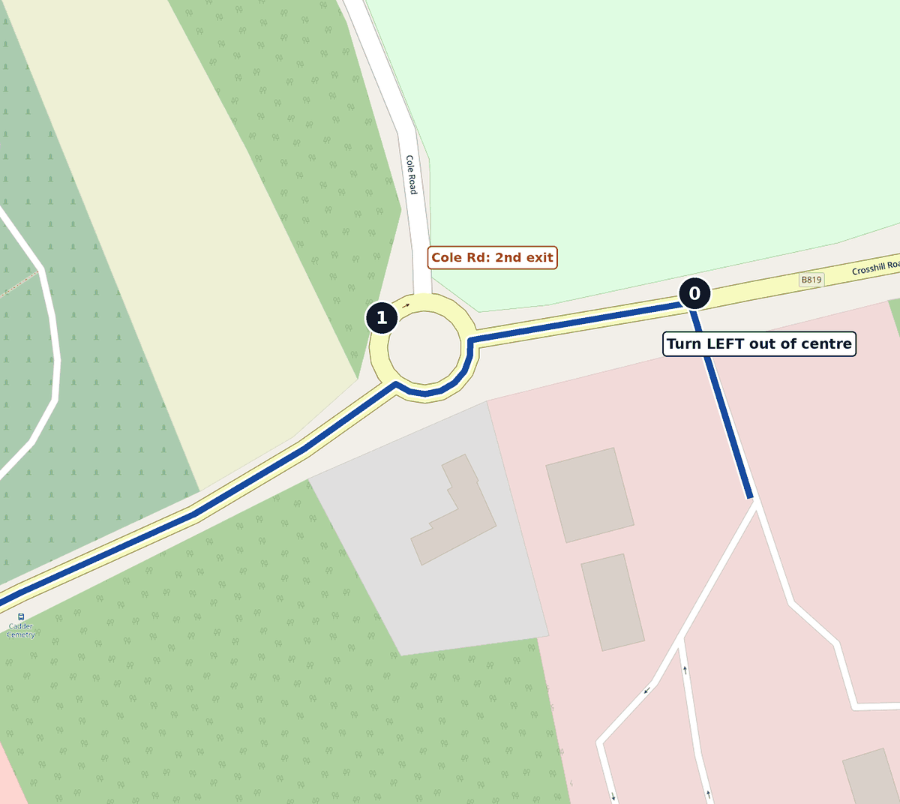

Leave the test centre
You'll hear something like"Drive out of the centre and turn left."

- Mirrors
- Interior and left mirror before moving off and before the turn.
- Signal
- Left, before the give-way line.
- Position
- Left side of the exit road; turn into the left-hand (westbound) lane.
- Look
- Right first, for traffic from the east (60 mph limit beyond the prison), then left, for traffic coming off the Cole Road roundabout.
WatchThe Cole Road roundabout is only about 57 m ahead. The indicator cancels as you straighten up, so check the left mirror and signal left again straight away for card 1.
Check: gate layoutStreet View at the gate ↗
Crosshill Road here: way 24910594, B819, maxspeed=40 mph. The centre itself is not labelled on OpenStreetMap. I placed it at the site with a one-way vehicle loop on the south side of Crosshill Road, matching DVSA's move of car tests to the Bishopbriggs goods-vehicle testing station. Confirm this is the gate you use.